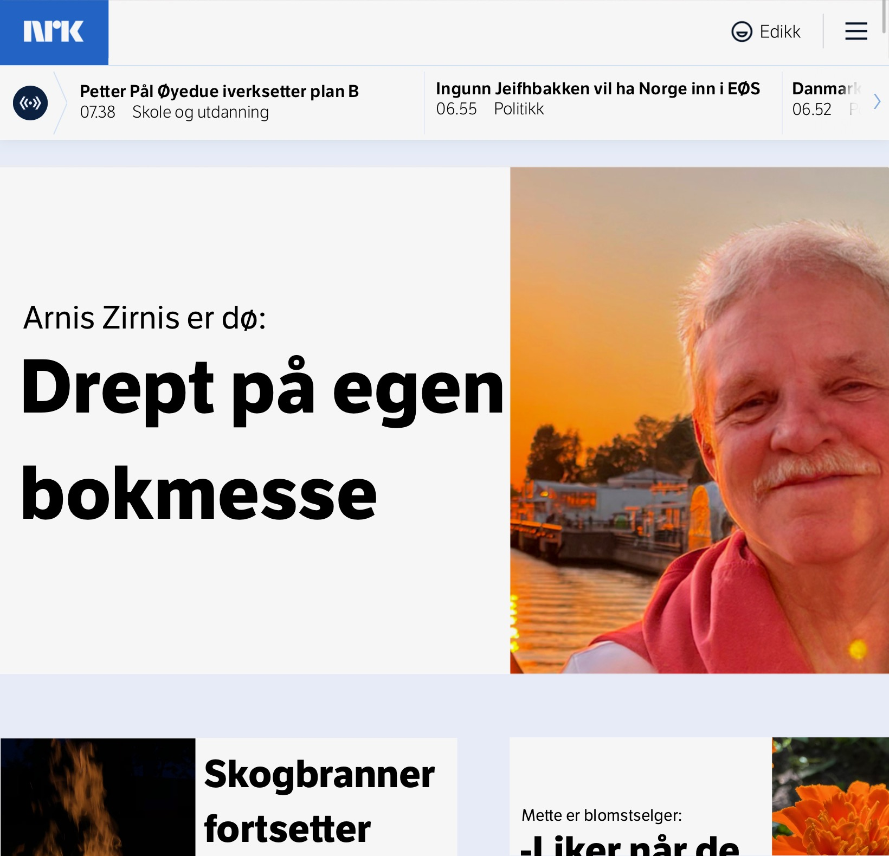

Zirnis News
Educational Project — Learn to Spot Fake News
Breaking
THIS IS A FAKE NEWS WEBSITE FOR TRAINING PURPOSES
LEARN HOW MISINFORMATION CAN LOOK REAL
EDUCATIONAL CONTENT — NOT ACTUAL NEWS


Advarsel!
Dette er en falsk nettside. Vennligst vær oppmerksom på at informasjonen her ikke er pålitelig.
Ikke stol på innholdet
Innholdet på denne siden er laget for å lure brukere. Vær forsiktig med hva du deler.
Sjekk kildene
Alltid verifiser kildene dine. Denne nettsiden er ikke en pålitelig kilde til informasjon.
🔎 Se etter unaturlige detaljer i AI-bilder:
Hender, tenner og bakgrunn kan ofte avsløre uekte innhold.
Hender, tenner og bakgrunn kan ofte avsløre uekte innhold.
📰 Slik spotter du falske nyheter:
- Sjekk kilden
- Se etter dato og forfatter
- Sammenlign med flere nyhetskilder
- Sjekk kilden
- Se etter dato og forfatter
- Sammenlign med flere nyhetskilder
📸 AI-genererte bilder har ofte rare lys/skygger.
Spør deg selv: «Ser dette realistisk ut?»
Spør deg selv: «Ser dette realistisk ut?»

Image caption